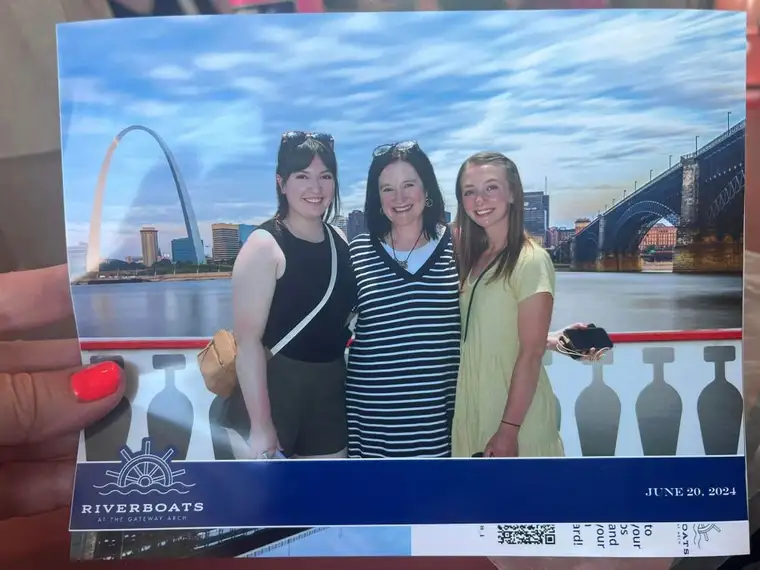
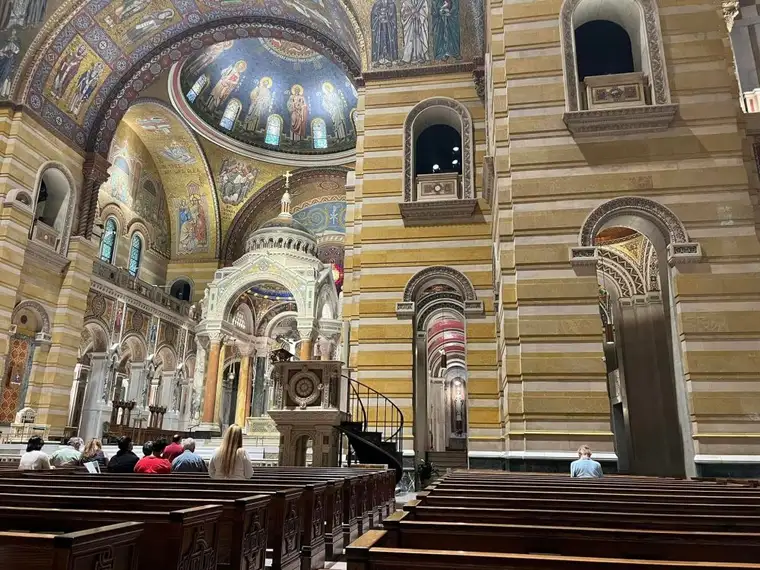
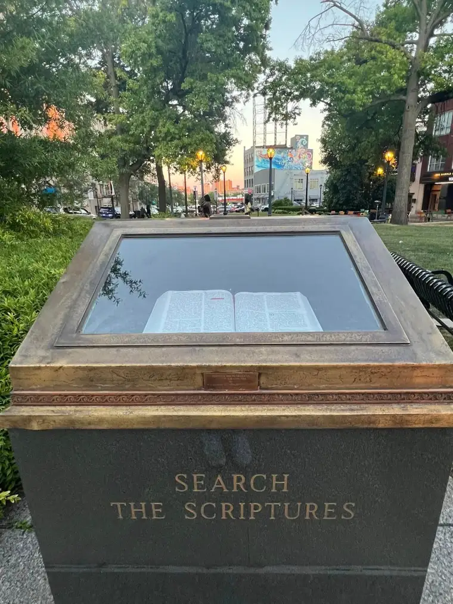
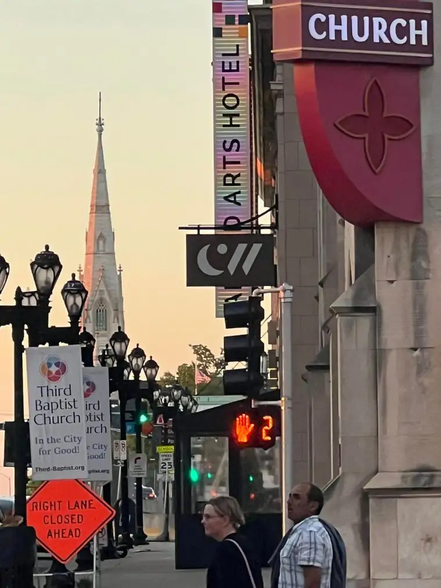
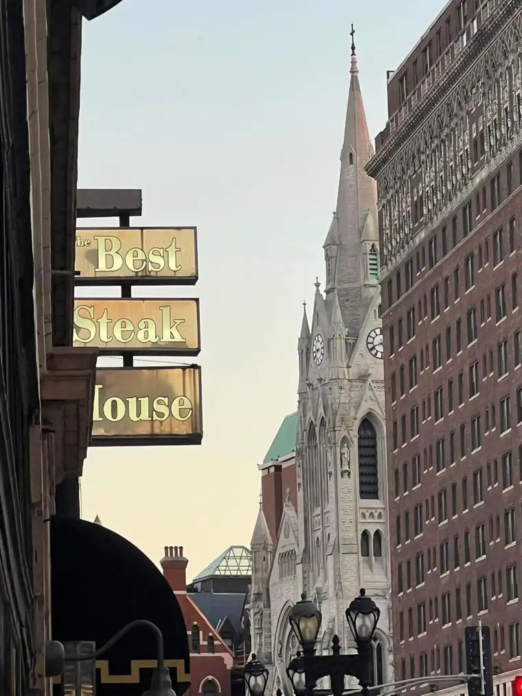
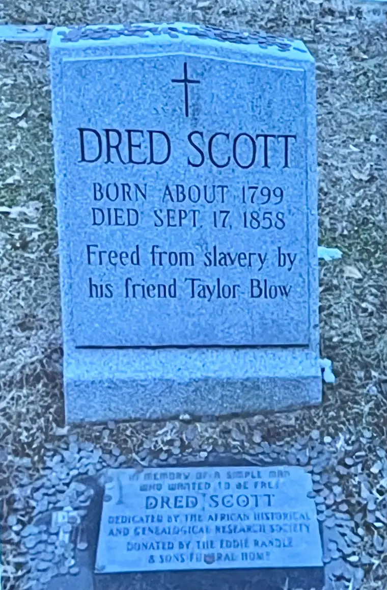
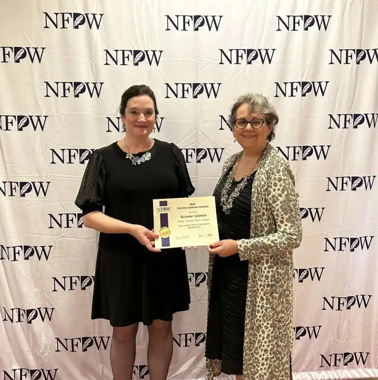
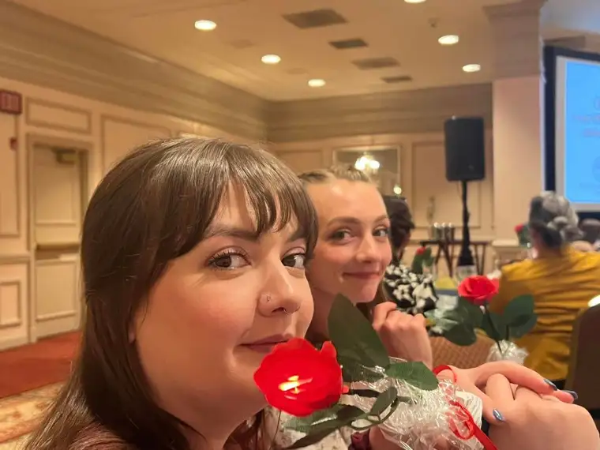

I’d never been to St. Louis, so when I learned that the 2024 National Federation of Press Women conference and awards ceremony would be there, my itch to go grew. My two adult daughters’ willingness to tag along offered the final push to pack my bags.

Since I’m always looking for signs of God’s presence, I soon began researching local churches and worship schedules, suspecting St. Louis to have abundant spiritual treasures.
On Sunday, our last full day, the long-awaited Cathedral Basilica of St. Louis finally came into view. A few hiccups had arisen over the long, hot trip, likely owing in part to a disrupted prayer routine, making my entrance into the cool sanctuary of the magnificent interior for Mass especially blissful; a welcome hug from God. Colorful mosaics with uplifting words from Scripture surrounded in every direction, reviving my tired soul.

The finale that last evening included a rousing performance at Jazz St. Louis featuring local trumpeter Keyon Harrold.
Not long before that, over an Italian meal, I mused to the girls about the many steeples we’d seen in the “Rome of the West.” St. Louis’s very name nods to a humble, faith-filled French king, hinting at the city’s deep religious heritage. The spires that mark the skyline—which we viewed from atop The Arch earlier—were undoubtedly inspiring!


But while I swirled spaghetti and meatballs in a spoon, my daughters challenged me with a question I’d asked around their age: Why doesn’t the Church sell its treasures to benefit the poor? I pointed to Matthew 26:11, reminding of Jesus’ response to grumblings after his anointing by a woman who’d “wasted” precious nard on him just before his death. “It could have been sold…and the money given to the poor,” the complainers spouted. “The poor you will always have with you,” Jesus said, “but you will not always have me.”


If the Church sold all its treasures, what could, as adequately as these, draw the gazes of rich and poor alike to heaven, offering the hope of eternity? As Mother Teresa aptly observed after a similar complaint, “The poor also love beautiful churches.”
A spiritual spark had been with me the trip’s duration. Even before leaving Fargo, I’d observed an abundance of crosses hanging from necks in the airport—proof that many still hold our Lord in esteem, even while he slips from some consciences.
At the conference itself, more evidence came from Lynne Jackson, a descendant of Dred and Harriett Scott. Her faith was evident in the powerful testimony of her great-great grandfather’s heroism in advancing human dignity for all.

Finally, accepting an award at the conference’s conclusion, I sensed a serendipitous “God wink” while being honored for an article I’d written a year earlier . It detailed a Fargo friend’s impromptu visit to observe, with her family, the unearthed, incorrupt remains of a nun from—of all places—Missouri.

When we seek the fingerprints of God each day, whether near or far, life is an unparalleled adventure.


[For the sake of having a repository for my newspaper columns and articles, I reprint them here, with permission, a week after their run date. The preceding ran in The Forum newspaper on June 30, 2024. Photos added after publication for the sake of sharing visuals from the trip.]